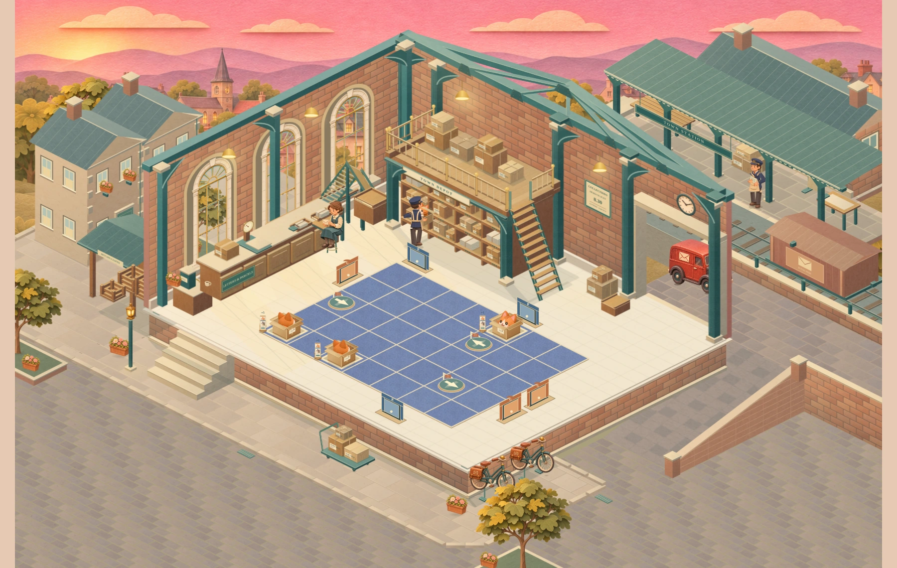
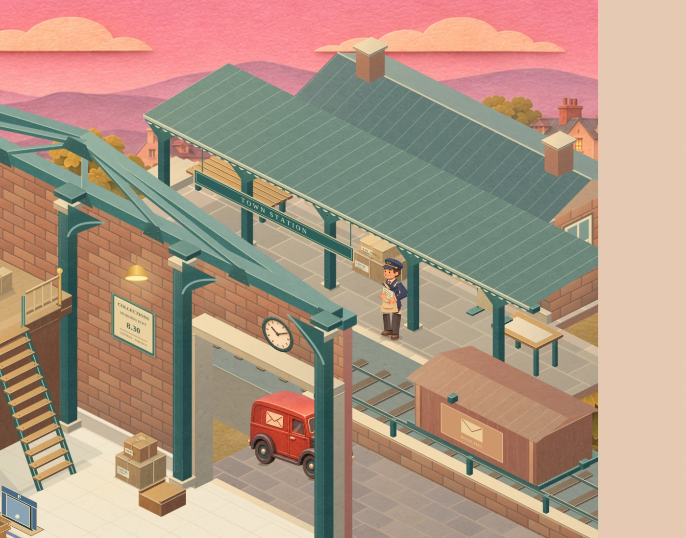
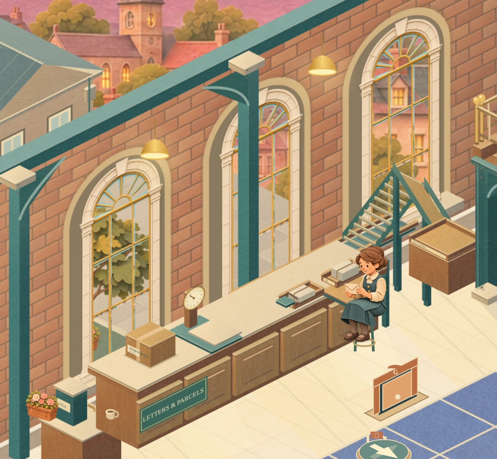
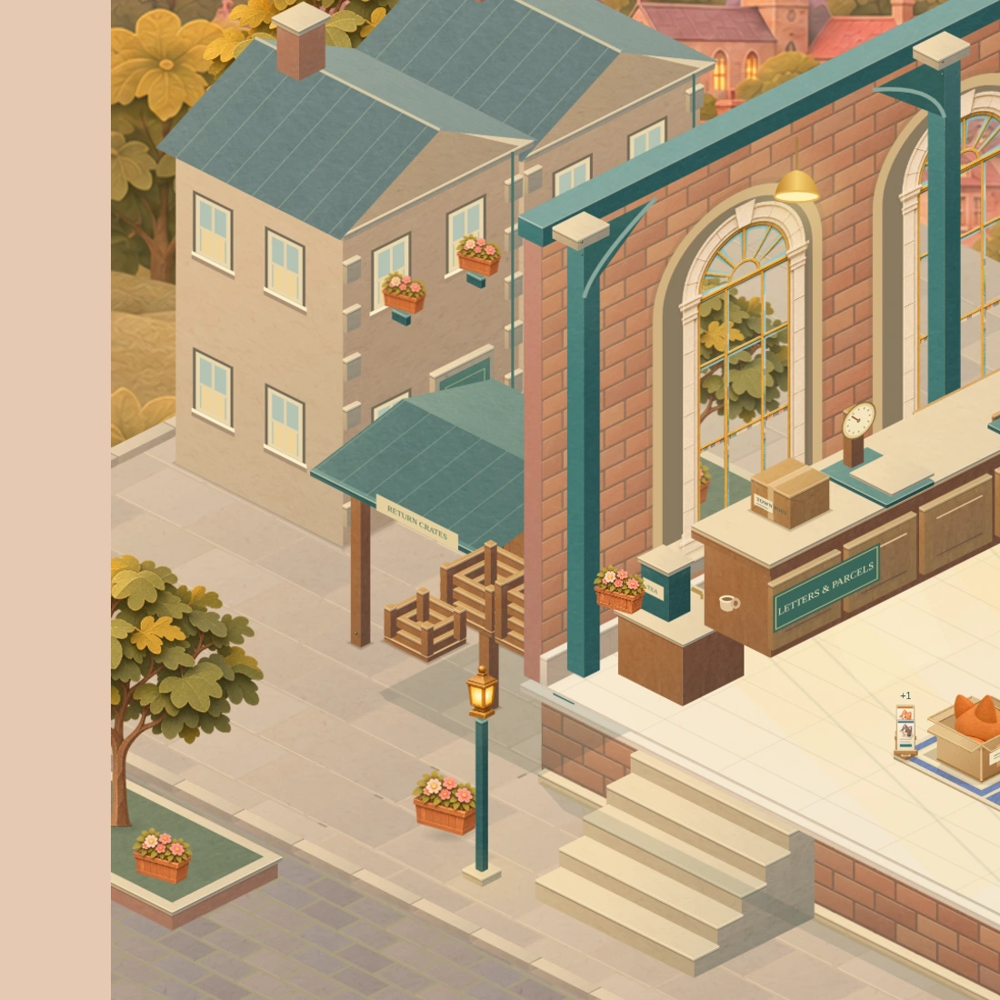
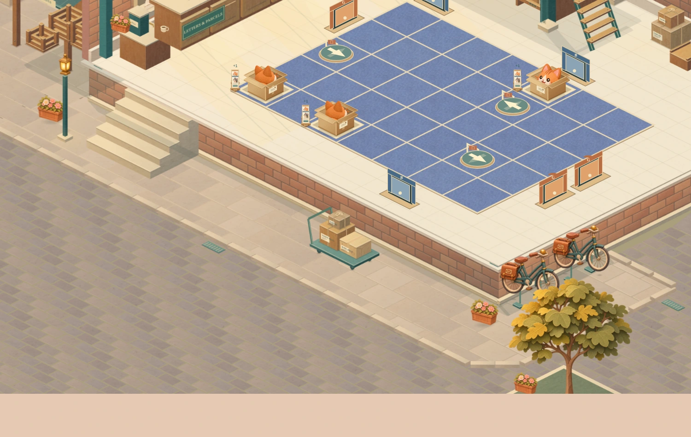

Actual renderer · 4-15 · maximum 7 × 5 board. Open any image for a closer view.Beyond the loading door
The station canopy bears on five posts beside the booking room. Parcels wait on the platform, a wagon rests on the existing rails, and a postal worker checks a manifest.

The station shares the hall’s projection, paper materials and morning light.Station life · planted feet and a quiet manifest-reading gestureOne town, through every window
Near terraces and courtyard trees lead to smaller roofs, the church and fading hills. Each window looks into that same scene; the original stone reveals and gold frames remain.

The view continues behind the wall. The nearest window looks onto its courtyard tree; the others open towards the town.
Near terraces gain stone corners, supported flower boxes and a courtyard tree.
Tree beds frame the accepted steps, bicycles and goods route.The working day continues
The driver, parcel exchange and van keep their existing 48-second schedule. The station reader uses that same clock.
The complete 48-second Depot roundInspect the van exchange and return
Close view · van exchange, departure and return, seconds 20–48These silent clips contain actual renderer frames sampled at 24 fps. They show the animation; they are not a device frame-rate measurement.
Every existing board and chapter
Watch chapter, growth and exit checks
Chapter four teaching demonstrationExisting board growth sceneExit retains the finished board
Compare the direction
Selected composition and previous playable scene
 Selected exterior concept. The implementation retains the accepted hall and measured straight goods ramp.
Selected exterior concept. The implementation retains the accepted hall and measured straight goods ramp. Previous accepted street section · same framing.
Previous accepted street section · same framing.Review scope
This pass completes the wider station, layered town and coherent window views for the separate Depot study. The puzzle, chapter timings and save behaviour retain their original data.
- All 25 original solutions and four board sizes checked.
- Canopy supports, wagon gauge, worker contacts and clear routes checked.
- Window changes confined to the glass; four board images remain exact.
- Phone controls, save isolation and reduced motion checked in Chromium.
Physical iPhone/Safari performance remains a device check. Implementation and verification notes · Visual assessment.